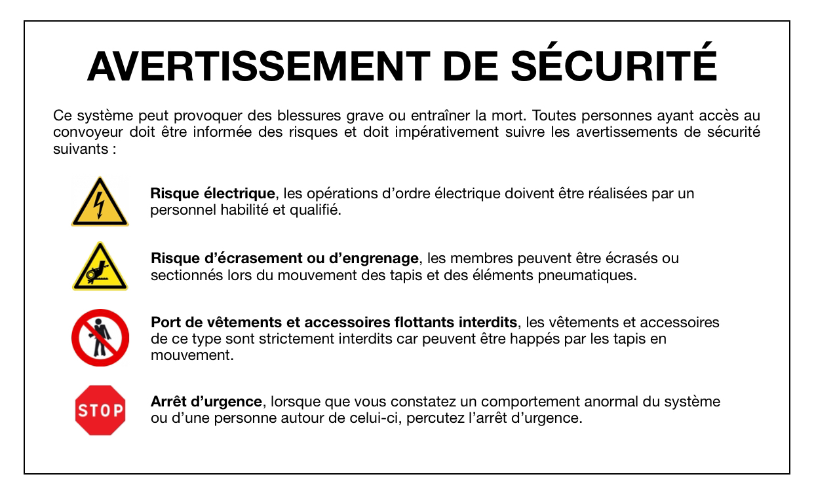
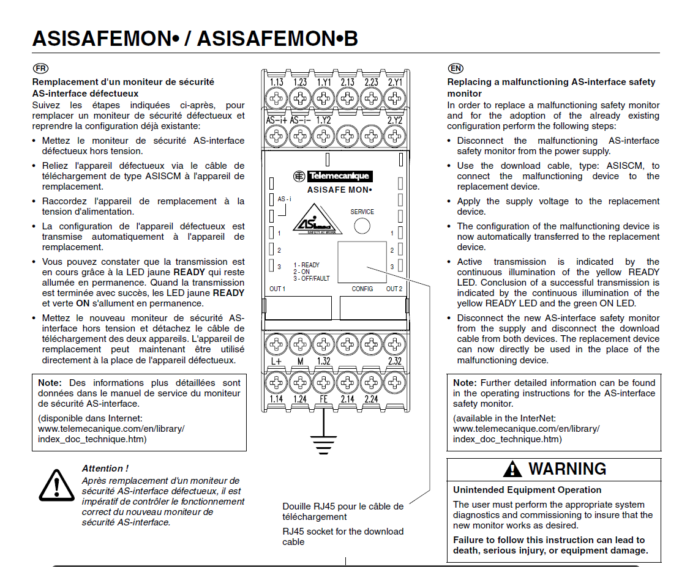

INSTALLER, INTÉGRER
Novice B.U.T. 2 Procéder à une installation ou à une mise en service en suivant un protocole
Composante essentiel
- CE1 : En garantissant un accompagnement client amont, aval et transverse dans une démarche qualité :
- CE2 : En respectant les normes et les contraintes réglementaires y compris dans un contexte international :
- CE3 : En gérant les réseaux industriels de communication pour une meilleure disponibilité et sécurité :
Je n'ai pas encore eu l'occasion de mettre en œuvre cette composante.
Lors de la remise en service de la ligne de production flexible, nous avons respecté les normes en vigueur en vérifiant le bon fonctionnement de tous les arrêts d'urgence et en modernisant les panneaux de prévention des risques liés à la machine.

Lors de la SAÉ Automatisme, j'ai mis en place une supervision via PcVue afin d'assurer un contrôle optimisé et ergonomique de la machine.

Situations professionnelles
- Planification d’opérations d’installation d’un système automatisé et ou d’une architecture réseau.
- Montage et installation d’éléments ou sous-ensembles d’un système automatisé et ou d’une architecture réseau.
- Mise en service d’un système automatisé et ou d’une architecture réseau.
- Etude d’implantation d’un système automatisé et/ou d’une architecture réseau dans un contexte industriel.
Apprentissages critiques
- APC1 : Appliquer la procédure d’installation
d’un système.
- APC2 : Exécuter la mise en service d’un
système en respectant la procédure.
SAé: Auto
La SAÉ Automatisme consiste à remettre en service une ligne de production flexible, qui
n'avait pas été utilisée depuis 2 ans.
APC1 :
Lors de la remise en service de notre ligne de production flexible,
nous avons dû nous référer aux documents de mise en service afin de nous guider et de
faciliter le processus.

APC2 :
Pour mettre en service PcVue, nous nous sommes appuyés sur la
documentation mise à notre disposition.

La SAÉ Automatisme consiste à remettre en service une ligne de production flexible, qui n'avait pas été utilisée depuis 2 ans.
APC1 :
Lors de la remise en service de notre ligne de production flexible, nous avons dû nous référer aux documents de mise en service afin de nous guider et de faciliter le processus.

APC2 :
Pour mettre en service PcVue, nous nous sommes appuyés sur la documentation mise à notre disposition.